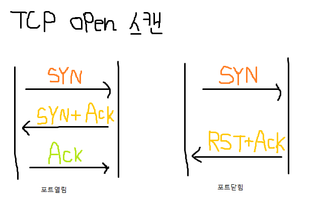
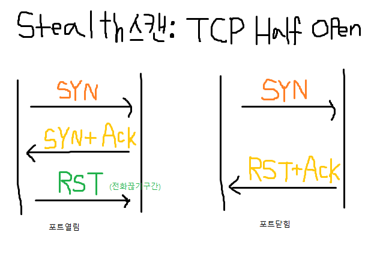
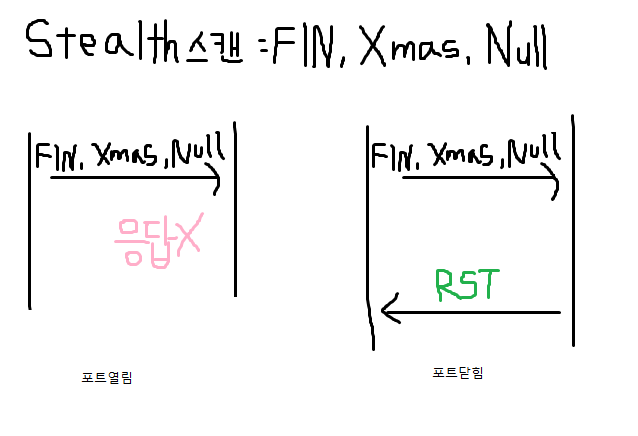
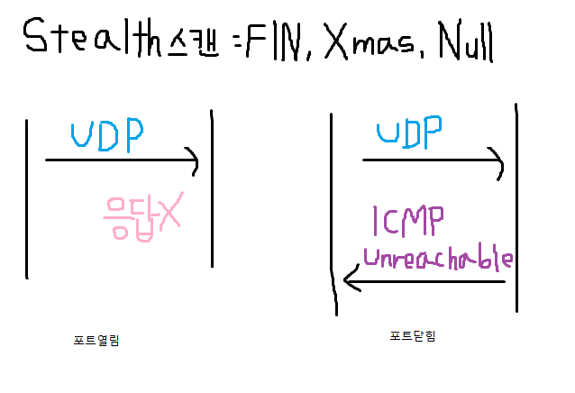

#20230520
유닉스 권한 관련 이론 (리눅스권한)
111 111 111
-rwxrwxrwx = 777권한.
-(파일) rwx(내권한) rwx(그룹권한) rwx(다른애들 A-1 A-2 B-2) jinsoo(파일네임) 10GB ~~
대략 이렇게 뜰 것임
r: read 읽기 | w: write 쓰기 | x: execution 실행
-rwxr-xr-x = 755권한
-rw-r--r-- = 644권한
chmod 755 = -rwxr-xr-x
알야아 할 것.
SetUID: root권한 없었는데 뭐 실행할 동안만 root권한 받고
끝나면 일반권한으로 돌려놓기
패스워드 바꿀 때만 잠시 쓰고 자동 돌려놓는 방식
SetGID: 우리 그룹도 잠시 root 권한 가지고
끝나면 일반 권한으로 바꾸기
stickybit: 크롬 등에서 한글파일 다운할 때 위치지정 없으면
마이크로소프트 같은 특정 파일에 공동으로 막 모여서 깔리는데
문제는 777 rwxrwxrwx 권한이라 안정성이 없음
stickybit rxt > 1777로 해두면 권한이 있어도 못지움
SetUID SetGID stickybit 설정법
SetUID 설정법 많이 나온다.
설정값:
SetUID: 4000
SetGID: 2000
Stickybit: 1000
SetUID + SetGID + Stickybit = 7000
rws(UID) rws(GID) rwt(Stickybit)
설정예시:
-rwxrwxrwx = 777
chmod 7777 index.php
-rwsrwsrwt = 7777
원본: -rwxr-xr-x = 755
chmod 4755 jinsoo
결과: -rwsr-xr-x = 4755
원본: -rwxr-xr-x = 755
chmod 1755 index.html
결과: -rwxr-xr-t = 1755
처음에는 중요한 건 권한을 잘 안 줌
644 정도로 하면 될 것 같다.
풋 프린팅과 스캔
풋 프린팅 > 사회공학 즉 기술적인 해킹공격
신문, 게시판 등 여러 경로를 통해 공격대상의 정보 모으는 법
(매우 넓은 범위 다양한 기법)
사회공학 > (70%~80%가 이 방식으로 해킹 당함)
기술적 해킹X 개인적 인간관계 업무적 관계로써
어깨 넘어 훔쳐보기 등 정보 획득
비기술적 경로를 이용해 정보 모으기
포트: 포트는 활성화된 데몬에 의해 열리며
각각의 프로토콜은 고유의 포트를 가진다.
시스템에는 65535개의 포트가 있으며,
보통 0번은 안 쓰며 1024포트부터 65534포트는
임의의 사용 용도를 위해서, 또는 클라이언트가
서버에 접속 시에 할당 받는 포트의 범위다.
21 FTP, 23 Telnet, 25 SMTP(메일 보내기)
53 DNS, 69 TFTP(인증X 단순 파일 전송)
80 HTTP, 110 POP3(서버에 저장X 메일),
111 RPC(원격서버에 프로세스 실행),
143 IMAP(메일을 읽어도 서버에 남음),
161 SNMP(네트워크 관리와 모니터링을 위함)
스캔 개념
스캔 > 스캔은 서비스를 제공하는 서버의 작동여부와
서비스를 확인하는 것, TCP기반의 프로토콜은 기본적으로
질의를 보내면 응답을 보내는 식입니다.
TCP Open 스캔 > 포트가 열릴 경우 세션 성립, (RST+ACK)

TCP Open인지 스캔하려면 SYN 보내보고
SYN + ACK 이 돌아오면 열린 것이고,
RST + ACK 이 돌아오면 닫힌 것이다.
stealth 스캔: TCP Half Open

포트 열린 경우, 서버로부터 SYN ACK 패킷 받고
RST 패킷을 보내어 연결 끊는다.
닫힌 경우에는 Open 스캔과 똑같음
예시: 아 시험 못 봤다 집 가면 혼나는데
집전화(SYN) 걸어보니 엄마가 받았네?
아 엄마 집에 있나보다
몰래 조용히 끊어버려야지(RST 리셋)
Stealth 스캔: FIN, Xmas, Null 스캔

포트가 열려있을 경우엔 응답이 없고
포트가 닫히면 RST + ACK 패킷 옴
예시: 공 던지면 포트 뚫려있으니 안 오고
막혀있음 돌아오는 방식
UDP open 스캔

웹사이트 뜨거나 아니면 안된다는 게 뜸
배너그래빙 > Telnet처럼 원격 시스템에
로그인 시도하면 알 수 있게 탐지.
운영체제를 알 수 있음.
(ping도 나오긴 한데 이건 버전도 알려주던가? 1 2 3)
배너그래빙: 방화벽 침입탐지 시스템의 탐지
traceroute의 원리
TTL 값을 1로 설정해서 포트번호를 33435번으로 하여
UDP 패킷을 한 번에 세 개씩 보낸다.
첫 번째 라우터는 1로 설정된 TTL 값을 0으로 줄이고
출발지 주소 ICMP Time Exeed Message(Type 11)을 보낸다.
a.a.a.a에서는 이 패킷을 보고, 첫 번째 라우터까지의 시간을 알아낼 수 있다.
다시 두번째 라우터까지는 TTL 값을 2로 해서 보내고,
첫번째 라우터의 과정(포트번호를 33435번으로 하여
UDP 패킷을 한 번에 세 개씩 보낸다.)을 거친다.
계속 라우터를 통과하여 목적지 시스템에 도달하게 되면,
ICMP port unreachable(Type 3) 패킷이 돌아오게 되고,
모든 과정이 끝난다.
traceroute 활용법
# traceroute 211.XXX.XXX.XXX
1 IP (IP) ms ms ms
2 IP (IP) ms ms ms
3 IP (IP) ms ms ms
4 IP (IP) ms ms ms
5 IP (IP) ms ms ms
6 * * *
7 * * *
8 * * *
이렇게 뜨면 6번 방화벽 걸린 거니
6번 우회해서 들어가면 되는 것이다.
길 막히면 돌아서 가는 듯이